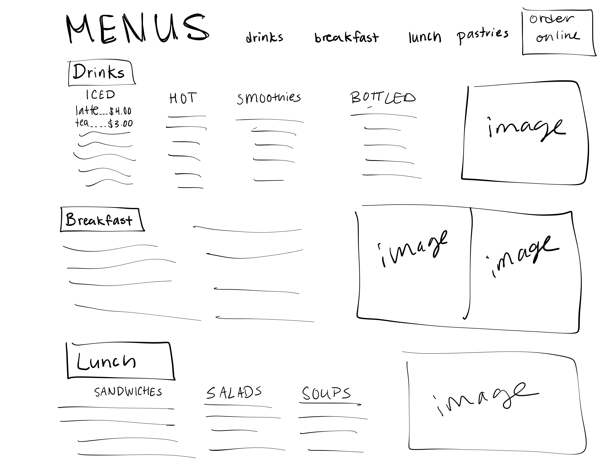
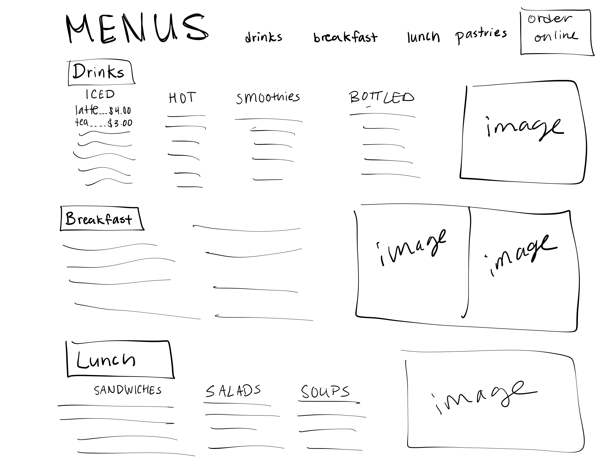

Indentifying Usability Problems
Picking a Webpage
The webpage I am redesigning is Norby's Cafe. I chose this website because it's for a cafe in my hometown that I go to with my family all the time, but their website is not very appealing and does not represent the cozy vibes that you get going in-person. Here are some screenshots of their current webpage:


Finding Problems
| Good Usability | Bad Usability |
|---|---|
|
|
Accessibility
The only error that WebAIM WAVE gave me was a “missing form label”. It also gave some alerts like “redundant link”, “skipped heading level”, and “justified text”. I generally agree with the WebAIM WAVE report about the accessibility problems because since it is such a straightforward website (basically just text and images), it does not have many chances for it to go astray. I think that WebAIM WAVE is good at detecting accessibility issues when it comes to design choices that are represented in the code (like alt text, colors, etc.), but it doesn’t necessarily account for more subjective design choices, like layouts.

 
